Gökyüzüne İmza Atanlar
ALTEK Teknoloji Takımı; 2024 yılında ODTÜ, Bilkent, Hacettepe ve TOBB ETÜ mühendislik öğrencileri tarafından kurulmuştur. Otonom sistemler, yapay zeka, gömülü yazılım ve aerodinamik alanlarında disiplinler arası bir güç birliğiyle çalışıyoruz.
Milli Teknoloji Hamlesi İçin Bir Aradayız
ODTÜ bünyesinde faaliyetlerini sürdüren takımımız, Türkiye'nin önde gelen mühendislik okullarından 11 yetenekli genci tek bir hedef altında birleştiriyor: TEKNOFEST Savaşan İHA yarışmasında tam otonom kabiliyetlerle zirvede yer almak.

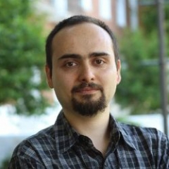
Doç. Dr. Mustafa Mert ANKARALI
Robotik, dinamik modelleme ve kontrol sistemleri alanındaki akademik uzmanlığı ile ALTEK Teknoloji Takımı'nın uçuş kontrol algoritmalarına, otonom sistem mimarisine ve mühendislik süreçlerine akademik danışmanlık sağlamaktadır.
Görüntü İşleme & Yapay Zeka Birimi
HAVA HEDEF TESPİTİ // OTONOM KİLİTLENME // DERİN ÖĞRENME
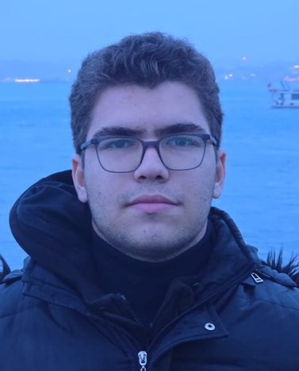
Hüseyin Şevket AKAR
YOLO tabanlı derin öğrenme modellerinin eğitimi, gerçek zamanlı hava hedef tespiti, otonom hava-hava kilitlenme algoritmaları ve takım liderliği.
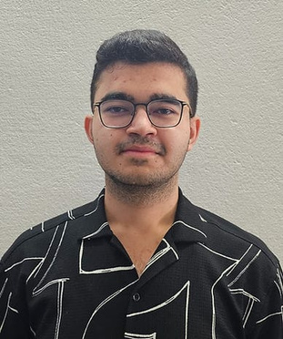
Furkan MUTLU
Gömülü yapay zeka model çıkarımı hızlandırma (TensorRT/CUDA), görüntü donanımlarının seçimi ve hedef takip algoritmaları.
Yazılım Birimi
GÖREV KONTROL // YER KONTROL İSTASYONU (GCS) // OTOPİLOT ENTEGRASYONU
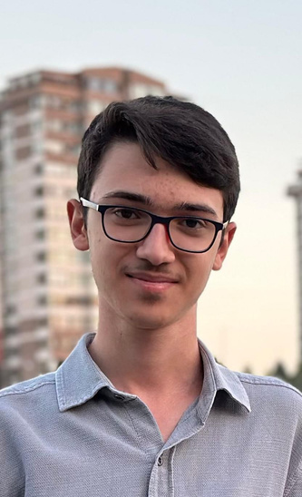
Mesut Ensar YAZAR
Görev kontrol yazılımları, uçuş bilgisayarı haberleşme mimarisi ve görev durum makineleri (State Machine).
LinkedIn Profili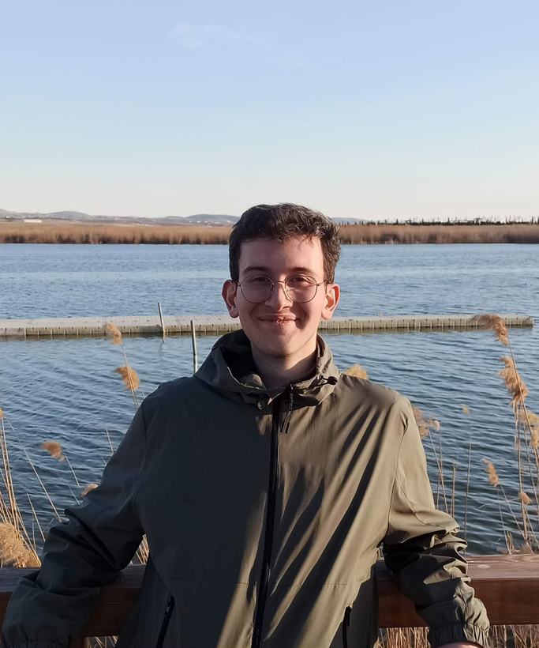
Muzaffer Emre BAŞKAN
Görev kontrol yazılımları, üç katmanlı mimari ve hiyerarşik sonlu durum makinesi, Altek Yer Kontrol İstasyonu (AYKİ) önyüz ve arkayüz tasarımı.
LinkedIn Profili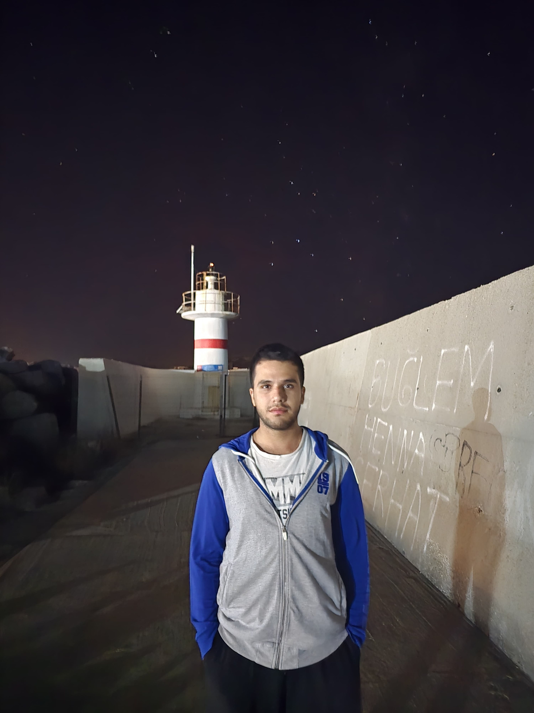
Mehmet Salih TAŞTAN
Otopilot haberleşme protokolleri (MAVLink), acil durum senaryoları ve otonom rota planlama yazılımı.
LinkedIn ProfiliElektronik & Aviyonik Birimi
UÇUŞ KONTROLCÜ // GÜÇ DAĞITIMI // TELEMETRİ // RF HABERLEŞME
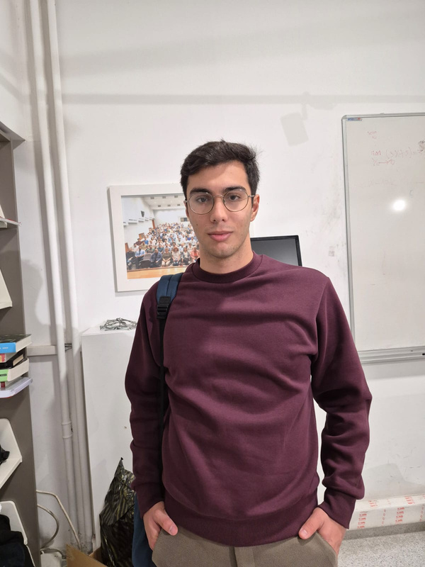
Emir YILMAZ
Uçuş kontrol kartı entegrasyonu, güç dağıtım mimarisi (PDB), sensör kalibrasyonu ve donanım arıza teşhisi.
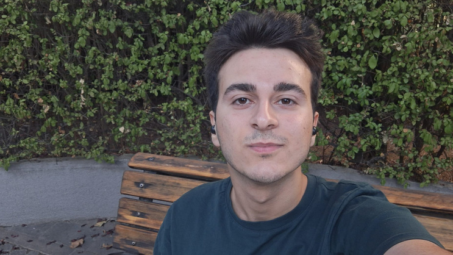
Yahya AYDEMİR
Uzun menzilli RF telemetri bağlantıları, Wi-Fi link stabilitesi, video aktarım hatları ve EMI/EMC gürültü izolasyonu.
Mekanik Birimi
AERODİNAMİK CFD // GÖVDE TASARIMI // İTKİ SİSTEMLERİ // İMALAT
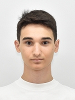
Ahmet Enes YAZAR
3D CAD gövde modelleme, mekanik montaj ve kontrol yüzeyleri kinematik tasarımı.
LinkedIn Profili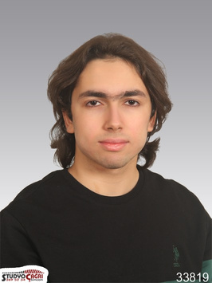
Sefa GÖKÇE
İtki sistemleri, motor & pervane eşleşme testleri ve dinamik yük testleri.
LinkedIn Profili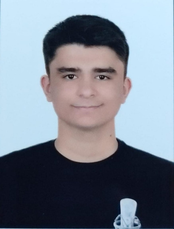
Hüseyin Emir MERT
Kompozit gövde laminasyonu, vakum infüzyon ve hafifletme optimizasyonları.
LinkedIn Profili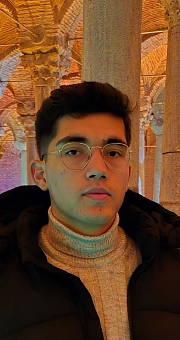
Ramazan BOZKURT
Aerodinamik CFD simülasyonları, sürükleme katsayısı analizi ve hava kanalı tasarımı.
LinkedIn Profili